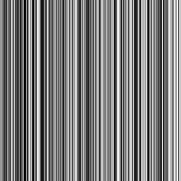
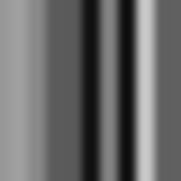
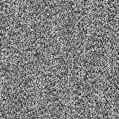
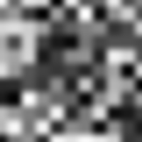
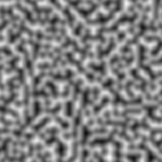
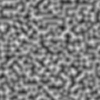
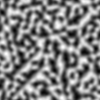
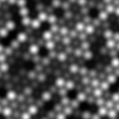

Noise
The Noise node creates noise values based on the selected type and dimension.
Supported noise types are: Value, Perlin, Simplex Value and Simplex.
Input:
|
scale
|
The scale of the noise. (> 1)
|
|
seed
|
An offset for x and z. (lower than float.MaxValue)
|
Output:
|
noise
|
The noise value. (between -1 an 1)
|
Internal Request:
Uses x and z as function parameters.
Uses seed to modify the seed input.
Value Noise 1D scale 1

Value Noise 1D scale 20

Value Noise 2D scale 1

Value Noise 2D scale 20

Perlin Noise 2D scale 10

Perlin Noise 3D scale 10

Simplex Noise 2D scale 20

Simplex Value 2D scale 20
